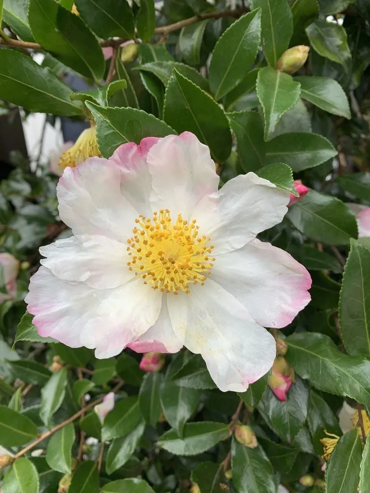

灌木与花木 · 植物界
茶梅 Camellia sasanqua

山茶科常绿灌木，秋冬开白至粉红色花，花量繁密，凋谢时花瓣散落，是南方庭院与绿篱的常见花木。
- 分类
- 门被子植物门纲木兰纲目杜鹃花目科山茶科属山茶属
- 栖息环境
- 温暖湿润的山地林缘与庭院，喜半阴和酸性土
- 地理分布
- 原产日本；中国长江以南广泛栽培
- 保护级别
- 暂无评估；中国未列入国家重点保护野生植物名录
物种志
茶梅为山茶科山茶属常绿灌木，高 1–3 米，嫩枝被短柔毛。叶互生，椭圆形至倒卵形，革质，边缘具细锯齿，表面深绿色、有光泽。花单生或 2–3 朵生于枝顶，花瓣 5–7 枚，白色、粉红色至红色，花径 4–7 厘米，花期 10 月至翌年 2 月；果实为蒴果，球形，果期翌年秋季。
茶梅原产日本，中国长江以南广泛栽培，喜温暖湿润、半阴的环境，不耐强光暴晒，适宜疏松肥沃、排水良好的酸性土壤。它花期正值秋冬少花季节，花量繁密、花色柔和，凋谢时花瓣一片片散落，是南方庭院、绿篱与盆栽的常见花木。栽培以扦插和嫁接繁殖为主，需注意防治炭疽病与介壳虫，浇水宜用雨水或晾晒后的自来水。
形态与习性
- 株高1–3 米，嫩枝被短柔毛
- 花期10 月至翌年 2 月
- 果期翌年秋季，蒴果球形
- 光照喜半阴，忌强光暴晒
- 水分喜湿润，忌积水
- 土壤疏松肥沃、排水良好的酸性土
- 主要用途庭院观花、绿篱与盆栽
趣味知识
- 茶梅的花期在秋冬，是少花季节里重要的观花灌木。
- 它的花朵凋谢时花瓣一片片散落，与整朵掉落的茶花不同。
- 茶梅原产日本，日本庭院栽培历史已有数百年。
- 茶梅喜酸性土，北方栽培需注意调节土壤酸碱度。